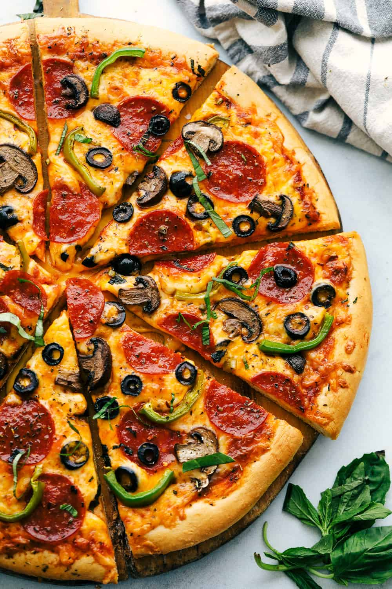

Pizza

Pizza Pizza! THE EASIEST HOMEMADE PIZZA EVER!
Foolproof, dough is ready in 20 minutes, best pizza ever and taken from my quick and easy dough recipe. Crispy crust with all your favorite toppings to make your pizza night a bonus!
Ingredients
- 1½ cups warm water
- 2 Tbsp. sugar
- 1 Tbsp. yeast
- 3½ cups flour
- 1 tsp Salt
Instructions
- Mix warm water, sugar and yeast together. Let that sit for 5 minutes.
- Add flour and salt to the water, sugar, and yeast. Mix this until smooth and let it raise for 10 minutes. I used my kitchenaid mixer with the dough hook and it was so easy and worked great!
- Prepare the dough for what you will be making and let rest for another 10 minutes before putting into the oven.
- Spread pizza sauce evenly about an inch from the edge. Top with cheese and desired toppings.
- Bake at 400 degrees for 15-20 minutes.
Return to main menu...